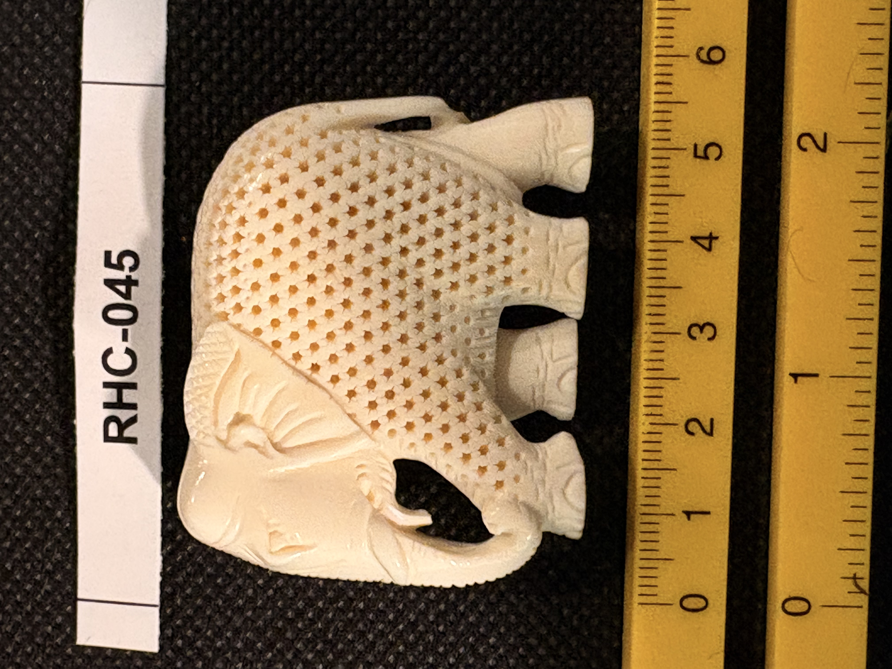

RHC-045 reviewed
Carved Ivory Elephant Figure with Netted/Diamond-Pattern Blanket

- Object Type
- Small carved figure of a standing elephant, with finely carved feet and a decorative textured 'blanket' or caparison covering its back, in a South/Southeast Asian (likely Indian) carved ivory tradition.
- Material
- Presumed ivory (cream-white, fine dense carving with light tan staining in the recessed netted texture).
- Dimensions (cm)
- length: 5.5cm — Overall size (~5.5cm) estimated off the cm scale shown in the photos.
- Subject Matter
- A standing elephant with a raised trunk and visible ears, its back and sides covered by a finely carved diamond/netted-pattern textile (a decorative blanket or caparison, a motif common in Indian ceremonial elephant depictions), standing on four short, individually carved feet.
- Artist Attribution
- unknown
- Date / Period
- undated (stylistic estimate: South/Southeast Asian, likely Indian, export carved ivory)
- Mount / Display Stand
- None — unmounted, freestanding figure.
- Color / Technique
- Fully carved figure with a densely pierced/textured diamond-net pattern over the back and sides representing a decorative blanket, contrasting with smooth carved head, trunk, ears, and feet; natural material coloring only, no ink work or paint.
- Condition Notes
- Figure appears intact; the leg/feet ends show finished, decoratively carved detail rather than breaks. Not physically examined.
- Distinguishing Features
- Continues the elephant motif seen in RHC-042 (hairpins) but as a standalone figure rather than a finial; the netted-blanket texture is a distinctive decorative device suggesting ceremonial Indian elephant imagery.
- Legal / Regulatory Status
- Material not confirmed. If genuine ivory, species and import history would need confirmation before any loan/sale (CITES/ESA considerations for Asian elephant ivory in particular). Flag for legal review; not a legal determination.
- Acquisition Info
- Purchased by Richard H. Cornelia in India while on a business trip.
- Rights / Copyright
- No attribution identified; copyright status undetermined.
- Keywords
- elephant carved figure netted pattern caparison Asian export not flat-engraved
- Related Items
- RHC-042
- Status
- reviewed
- Date Cataloged
- 2026-07-15
Open Research Questions
Research finding (phase 3, 2026-07-15): Confirmed netted/caparison-pattern elephant carving is a well-documented Indian decorative tradition — ceremonial elephant caparisons ('nettipattam') are a real, still-practiced Indian temple-festival tradition (gold/silver-and-fabric coverings draped over temple elephants), and ivory carving centers in Delhi, Mysore, Kerala, and Visakhapatnam have long produced miniature ivory elephant figures reproducing this ceremonial dress in carved relief. Supports an Indian (rather than Chinese/Southeast Asian) origin for this figure specifically, distinct from RHC-042 and RHC-055's more Chinese-export-styled elephant pieces. Per Richard H. Cornelia (written review of printed catalog booklet, 2026-07-19): "Elephant with decorative perforations. I bought this ivory item while in India on a business trip."